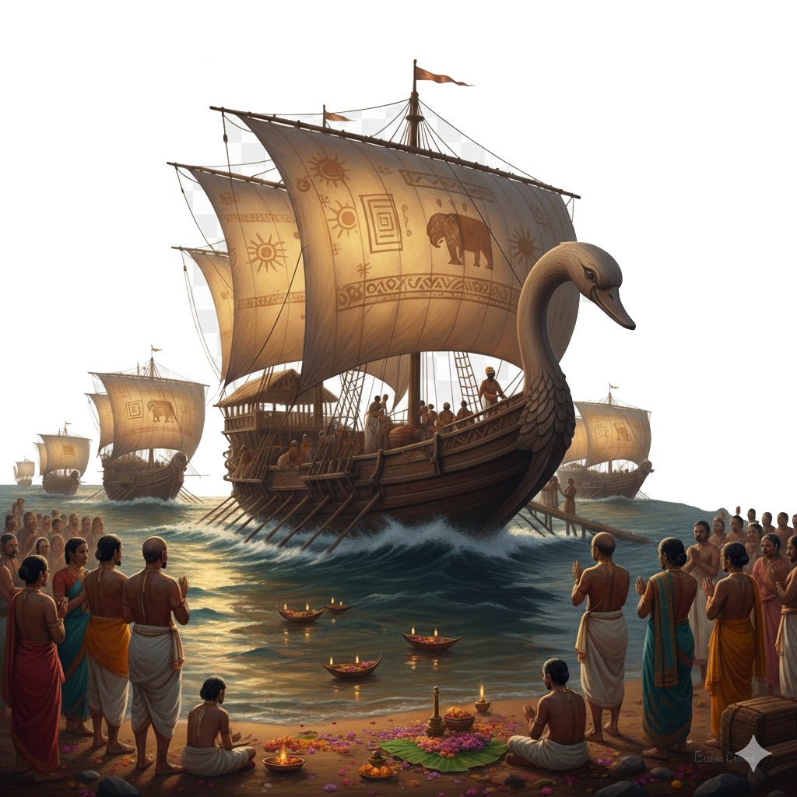
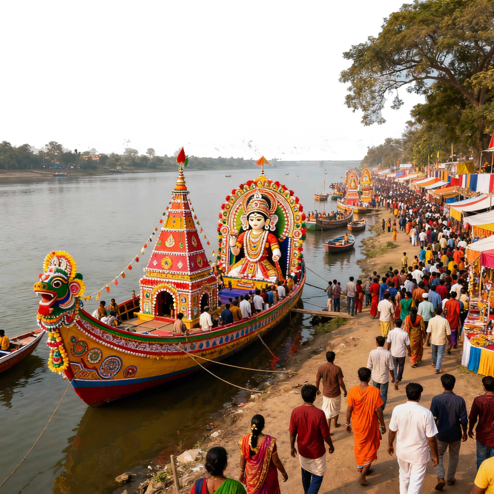
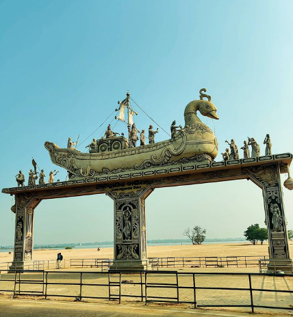
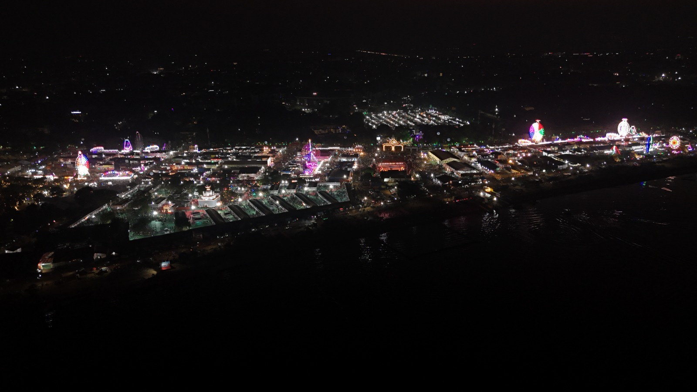
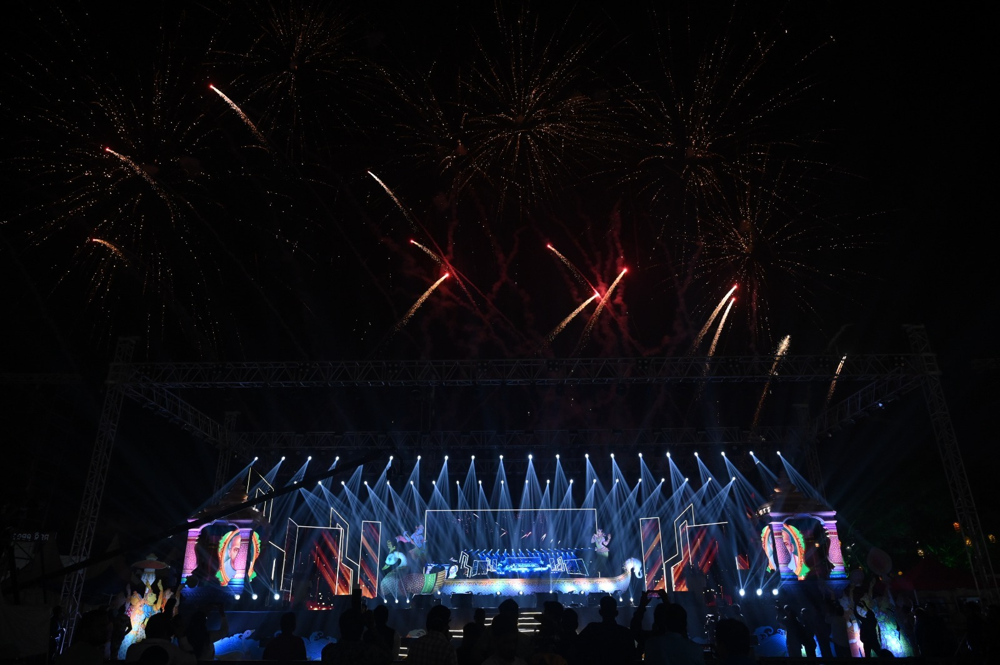
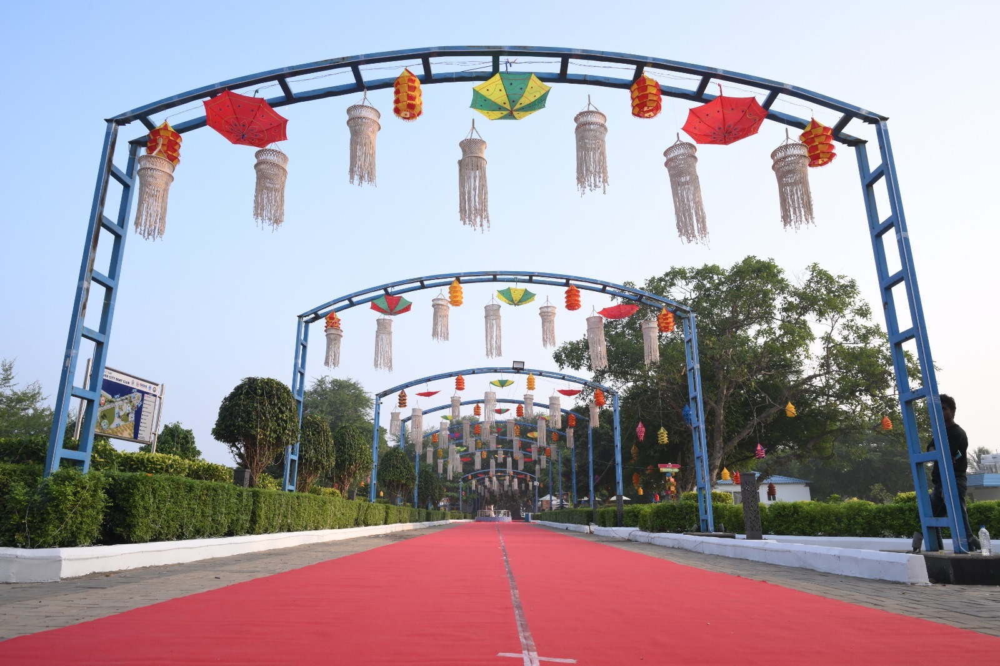
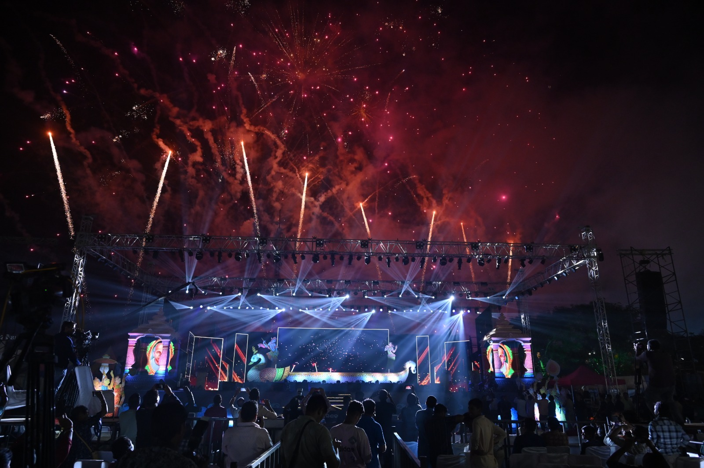
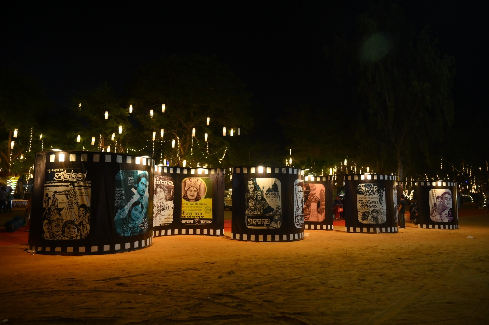

×

Baliyatra Festival in Cuttack is an auspicious festival celebrated on "Kartika Purnima" Every Year. The seven days long festival held in November is observed as the largest trade Fair in Odisha. This fair is extremely Popular and the festival is celebrated with much pomp and grandeur in the historic city of Cuttack on the bank of river Mahanadi from the day of "Kartika Purnima". Lakhs of people throng to enjoy the fair.
A Journey Through Time
Baliyatra, literally meaning "voyage to Bali," is one of India's largest open-air fairs and the world's second-largest trade fair. This magnificent festival commemorates the ancient maritime trade between Odisha and Southeast Asian countries, particularly Bali, Java, and Sumatra.
The festival celebrates the courage and spirit of Odia traders who embarked on perilous journeys across the Bay of Bengal, carrying with them not just goods but also the rich cultural heritage of Odisha. Today, Baliyatra stands as a testament to Odisha's glorious maritime past and its vibrant present.
Years of History
Annual Visitors
Stalls & Exhibitions
Live Streaming - Experience the Magic of Baliyatra
Watch live Odissi dance, folk music, and traditional performances showcasing Odisha's rich cultural heritage.
Explore thousands of stalls featuring handicrafts, textiles, jewelry, and local products from across Odisha.
Savor authentic Odia cuisine and delicacies from different regions, including famous street food and traditional sweets.
The Legacy of Odia Sailors

Odisha's maritime trade with Southeast Asia began over 1000 years ago, with traders sailing to Bali, Java, and Sumatra. These ancient mariners braved the treacherous waters of the Bay of Bengal, carrying with them not just goods but also the rich cultural heritage of Odisha.
The maritime routes established by these traders became the foundation for cultural exchange between India and Southeast Asia, influencing art, architecture, and traditions across the region.
The Kalinga Empire established extensive trade networks across the Indian Ocean, making Odisha a major maritime power. This powerful kingdom controlled vast territories and maintained strong commercial relationships with distant lands.
The empire's influence extended far beyond its borders, establishing Odisha as a center of maritime commerce and cultural exchange in ancient times.

Today, Baliyatra celebrates this rich heritage while promoting tourism and cultural exchange in modern Odisha. The festival has evolved into a grand celebration that attracts millions of visitors from around the world.
Modern Baliyatra serves as a bridge between the ancient maritime traditions and contemporary cultural expressions, keeping the legacy alive for future generations.
Capturing the Spirit of Baliyatra






Stay Updated with Baliyatra News & Stories

Argus News becomes first-ever Exclusive Media Partner for Baliyatra Cuttack 2025. Comprehensive coverage and branding rights granted by Cuttack District Administration.
Read More
75,000 free books to be distributed at Historic Baliyatra Cuttack 2025. Citizens can donate old books at designated collection centers.
Read More
ଓଡ଼ିଶାର ସର୍ବବୃହତ ତଥା ଦକ୍ଷିଣପୂର୍ବ ଏସିଆର ବୃହତ ବାଣିଜ୍ୟ ମେଳା ଓ ସାଂସ୍କୃତିକ ମେଳାର ସହଯୋଗୀ ରାଷ୍ଟ୍ର ଭାବେ ଇଣ୍ଡୋନେସିଆ ନାଁ ଘୋଷଣା କରାଯାଇଛି । ପୁରାତନ କଳିଙ୍ଗ ଏବେର ଓଡ଼ିଶା ସହ କାଳ କାଳରୁ ରହିଛି ଇଣ୍ଡୋନେସିଆ (ବାଲି)ର ସମ୍ପର୍କ ।
Read MoreWatch Baliyatra Highlights & Documentaries
A comprehensive documentary exploring the rich history and cultural significance of Baliyatra festival.
Watch the mesmerizing Odissi dance and traditional folk performances from Baliyatra 2025.